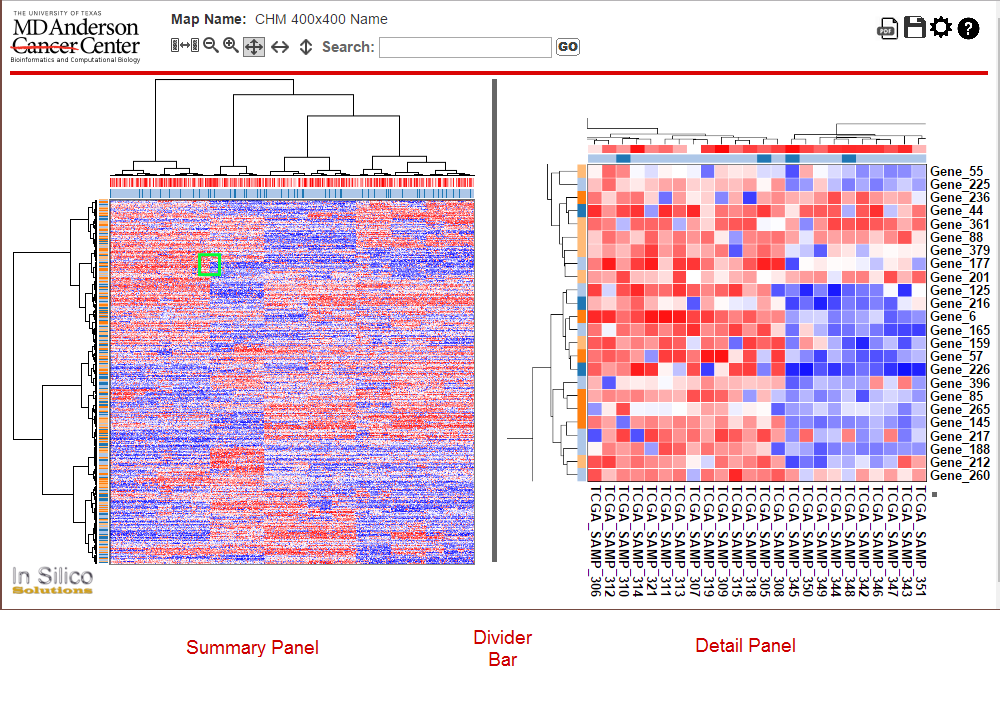
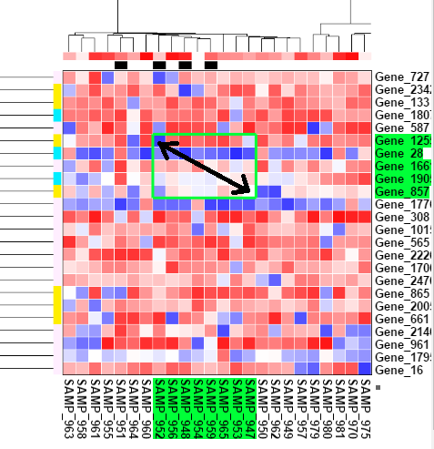
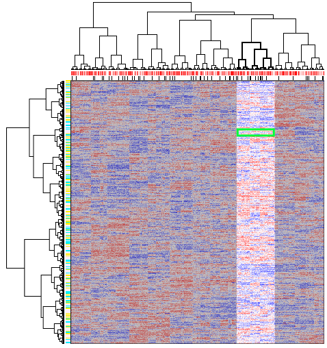

NG-CHM Heat Map Viewer Help
NG-CHM Heat Map Viewer Help
The NG-CHM Heat Map Viewer is a dynamic, graphical environment for exploration of clustered or non-clustered heat map data. This help page provides an introduction to the controls and features of the application. For information on building heat maps and additional advanced features of the NG-CHM Heat Map Viewer, please see our full documentation.

The NG-CHM Heat Map Viewer contains two initial panes (Summary & Detail). The Summary Pane on the left provides a full view of your heat map. The Detail Pane on the right provides a zoomed in view of a portion of the heat map. Click anywhere on the summary picture to see the detail of that portion of the map. The colored highlight box on the Summary Pane indicates the portion of the heat map currently displayed in the Detail Pane. You may zoom in or out with the mouse scroll wheel or zoom in/out buttons to see smaller or larger portions of the map in the Detail View. When the zoom level permits, row and column labels will be displayed in the Detail Pane. You may also use arrow keys to move up/down/left/right one row in the Detail Pane. The divider bar may be moved by clicking on it and dragging left or right to change the relative size of the Summary and Detail Panes.
We have a video series of short tutorial videos to introduce the various capabilities and controls of the NG-CHM Viewer: Basic NG-CHM Navigation
The NG-CHM Viewer has been designed as a configurable multi-pane interface. The initial presentation of the interface is, as shown above, a two pane interface with Summary and Detail panes. However, the user may control the number of panes by adding more panes to the screen. These panes can contain a variety of content options. Please see the Pane Menu section below for information on all of the features available within an NG-CHM Viewer pane.

There are a variety of buttons on the header bar to manipulate the heat map view. Each has a tooltip that can be displayed by hovering over the button for a view seconds with the mouse pointer.
| Control | Description |
|---|---|
| Primary sets a selected Detail pane to the "Primary" pane. The primary pane is the one open Detail Pane that always remains in sync with the Summary Pane. Each Detail Pane that is not the Primary will contain this control on its header bar. | |
| Zoom in on the Detail Pane making rows and columns larger. Mouse scroll forward will also zoom in. On touch enabled devices, use a two finger pinch inward to zoom in. Each Detail Pane will contain this control on its header bar. | |
| Zoom our on the Detail Pane to show more rows and columns. Mouse scroll backward will also zoom out. On touch enabled devices, use a two finger pinch outward to zoom out. Each Detail Pane will contain this control on its header bar. | |
| Set the Detail Pane in normal mode where the data points are square and the number of rows/columns shown will be controlled only by the zoom level. Normal mode contrasts with ribbon view modes. When selected, the background of the button will be darker. Each Detail Pane will contain this control on its header bar. | |
| Set the Detail Pane in ribbon horizontal mode. It is often useful to be able to see the full width of the heat map but also see the row labels. Ribbon horizontal mode shows a horizontal slice of the heat map containing all the columns and a few of the rows. The zoom level will then control how many rows are shown. When selected the button background will be darker. Select the normal mode button to exit ribbon view. Each Detail Pane will contain this control on its header bar. | |
| Set the Detail Pane in ribbon vertical mode. It is sometimes useful to be able to see the full height of the heat map but also see the column labels. Ribbon vertical mode shows a vertical slice of the heat map containing all the rows and a few of the columns. The zoom level will then control how many columns are shown. When selected the button background will be darker. Select the normal mode button to exit ribbon view. Each Detail Pane will contain this control on its header bar. | |
| Search: | Enter a search term in the search box and hit enter or click the Go button to look for the search term in the heat map labels. The search by default will do partial matches so searching for 'Gene_2' will find Gene_2 and Gene_21. To search for an exact term, place quotes around the search string. Multiple search terms can be entered separated by spaces. The search box will turn yellow if some search terms are not found and will turn red if no search terms are found. Use the -> and <- buttons next to the search box to have the detail view jump to the next or previous row / column that match the search terms. The labels of rows and columns that match the search term will be selected (green background) and '<' with a green background will be placed at the position of matches in the Summary Pane. To clear selections from a search, use the red X button next to the search box. |
| This button opens opens the heat map display properties panel. It provides quick access for changing heat map display colors as well as access to other heat map configuration settings. Please see our full documentation for details. | |
| The NG-CHM collapsible (hamburger) menu button opens a drop-down menu containing features for performing a variety of tasks related to the displayed heat map. Please see the NG-CHM Collapsable Menu section below for more information on available menu features. | |
| For advanced maps with multiple data layers, this control allows you to toggle between the different data layers. Please see our full documentation for details. | |
 |
The Pane Menu button opens a drop-down menu containing features for filling a given pane with different content. Please see the Pane Menu section below for more information on available menu features. |
The NG-CHM collapsable (hamburger) menu button opens a drop-down menu containing features for performing a variety of tasks related to the displayed heat map. It possible for individual NG-CHM systems to be upgraded to place additional menu items into the collapsible menu.
| Control | Description |
|---|---|
| The PDF button opens up a PDF generation window that allows you to generate a PDF document of the heat map. The PDF window allows selection of various options for the generation of the PDF. The detail window in the generated PDF will be in the same position and zoom level as is currently shown in the viewer. | |
| The thumb nail button downloads a small .PNG image of the displayed heat map summary pane. | |
| The save button allows users to save a local copy of a heat map. Changes made through the configuration panel are saved to the local copy of the heat map. Heat maps are stored as a collection of files compressed into a zip file. Local heat map files can be viewed in several ways including a local stand-alone version of NG-CHM Heat Map Viewer. Please see our full documentation for details. | |
| The gear button opens the heat map display properties panel. Many items of the heat map can be configured including heat map colors, label sizes, which covariate bars to display, and data layer breakpoints. Please see our full documentation for details. | |
| The plug-in button opens the plug-in help dialog containing NG-CHM plug-in information. This dialog displays all active plug-ins for a given heat map as well as those installed in your NG-CHM system. | |
| The help button opens the NG-CHM Viewer Help page. This page provides introductory help information for the viewer as well as links to more detailed help information. | |
 |
The about button opens the NG-CHM Viewer "about" page which provides version information for the viewer application. |
The Pane Menu icon button opens a drop-down menu containing features for filling a given pane with various types of content. The Pane Menu icon will appear on the pane header, in the right corner, on each open pane in the NG-CHM Viewer interface. Clicking on the button will present the user with options for what they want to see displayed in a given pane.
| Menu Selection | Description |
|---|---|
| Summary heatmap | This menu item will populate the selected pane with the Summary view of the heat map. There can only be one Summary pane visible in the NG-CHM Viewer application, so if there is a Summary pane visible when the user selects this option, the Summary display will be removed from any other panes. |
| Detail heatmap | This menu item will populate the selected pane with a Detail view of the heat map. The pane will be displayed showing the current selected area in the Summary pane. The user may open multiple detail panes within the NG-CHM Viewer application. |
| Linkouts | This menu item will populate the selected pane with the content from linkout web sites. In the Detail Pane, some heat maps have a link out capability that supports deeper exploration of heat map data. Pre-constructed link out functions are available for certain data types, for example Hugo gene symbols. Please see our full documentation for more information on linkouts. |
| 2D Scatterplot | This menu item will open a two dimensional scatterplot plugin in the selected pane. The configurable scatterplot can interact with the heat map based upon selections made by the user. |
| 3D Scatterplot | This menu item will open a two dimensional scatterplot plugin in the selected pane. The configurable scatterplot can interact with the heat map based upon selections made by the user. |
| PathwayMapper | This menu item will open the PathwayMapper plugin in the selected pane. PathwayMapper is a collaborative visual plugin for cancer pathways. PathwayMapper can be used as an interactive graphical editing tool for creating and modifying pathways with the ability to overlay genomic data. |
| Add Pane Below | This menu item will open a new pane just below the selected pane. |
| Add Pane Below | This menu item will open a new pane just to the right of the selected pane. |
| Collapse | This menu item will collapse the contents of the selected pane. |
| Close | This menu item will close the selected pane. |
Rows or columns can be selected through a search or may be selected by clicking on a row or column label. To select multiple labels use shift-click, or tap and drag for touch enabled devices, to select a block of labels or control-click to individually select multiple labels. When labels are selected, you can right click, or long tap for touch enabled devices, on one of them to access a pop-up menu of actions that can be performed on the selected labels. For advanced maps, a variety of context specific link out options may be available.
Drag selection is also possible. On the Detail Pane hold down shift and the left mouse button while dragging the mouse pointer across the rows and columns you wish to select.

For clustered heat maps, It is possible to select rows / columns by clicking on the dendrogram branch of the rows/columns you wish to select.
Selection operations performed on the Summary Pane will not select rows and columns but will select the view shown in the Detail Pane. Use shift and hold down the left mouse button while dragging the mouse pointer across the region that you would like to view in the Summary Pane. For touch enabled devices, use two fingers to select and drag the area you would like to view. The Detail Pane will select the closest matching zoom level for the region you wish to view.
For clustered heat maps, a selection option in the Summary Pane can be used to view a section of the map associated with a dendrogram branch. This feature is particularly useful for investigation of sub-sections of the heat map related class of samples (e.g. subgroup of cancer patients identified by a dendrogram branch). Selecting a dendrogram branch in the Summary Pane will lock the Detail Pane to only portion of the heat map associated with the selected branch of the dendrogram. You can scroll up/down or left/right through dendrogram branch data. This view is essentially a restricted ribbon view. To get out of the sub-dendrogram view, click on the normal mode button.
